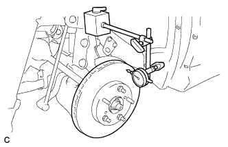

Front Brake Inspection |
| 1. Inspect Disc Brake Piston and Cylinder |
Check that the side surface of the disc brake piston and the inner surface of the cylinder are not damaged.
| 2. Inspect Disc Brake Pad Thickness |
| 3. Inspect Front Disc Brake Pad Support Plate No.1 |
Clean the pad contact surfaces and mounting contact surfaces of front disc brake pad support plate No.1 with brake cleaner, and check for deformation, cracks, rust and foreign matter that is difficult to remove.
When installing front disc brake pad support plate No.1 to the cylinder mounting, clean the pad support plate contact surfaces of the cylinder mounting with brake cleaner, and with the plate installed to the cylinder mounting, check for looseness and deformation.
When installing the pads, check that the support has sufficient spring force and the pads do not easily come off after installation.
| 4. Inspect Front Disc Brake Pad Support Plate No.2 |
| 5. Inspect Disc Thickness |
| 6. Inspect Disc Runout |
Before inspecting the disc runout, inspect the front axle hub bearing looseness and the front axle hub runout. (see)
 |
Align the matchmarks on the disc and axle hub, and secure the disc with the hub nuts.
 |
Using a dial indicator, measure the disc runout at 10mm inside the outer edge of the disc.